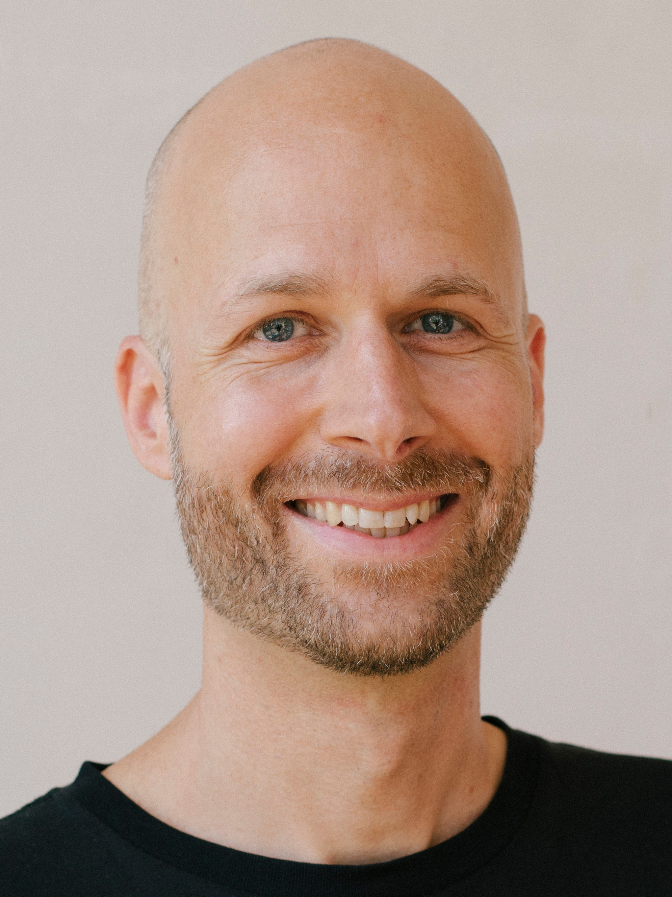

„Therapie bedeutet, etwas herauszufinden. [...] Es geht darum, wer du im tiefsten Grunde deines Herzens bist.“
– Ron Kurtz
+49 (0)176 650 37 164
info@pascalstorz.com
Praxis am Ufer
Heckmannufer 6A
10997 Berlin
Meine Website ist derzeit im Aufbau